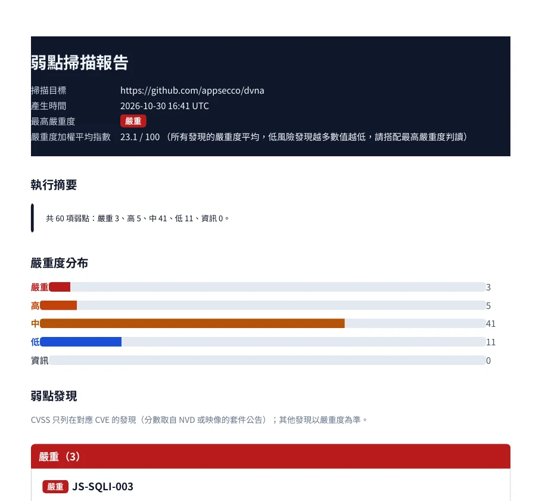
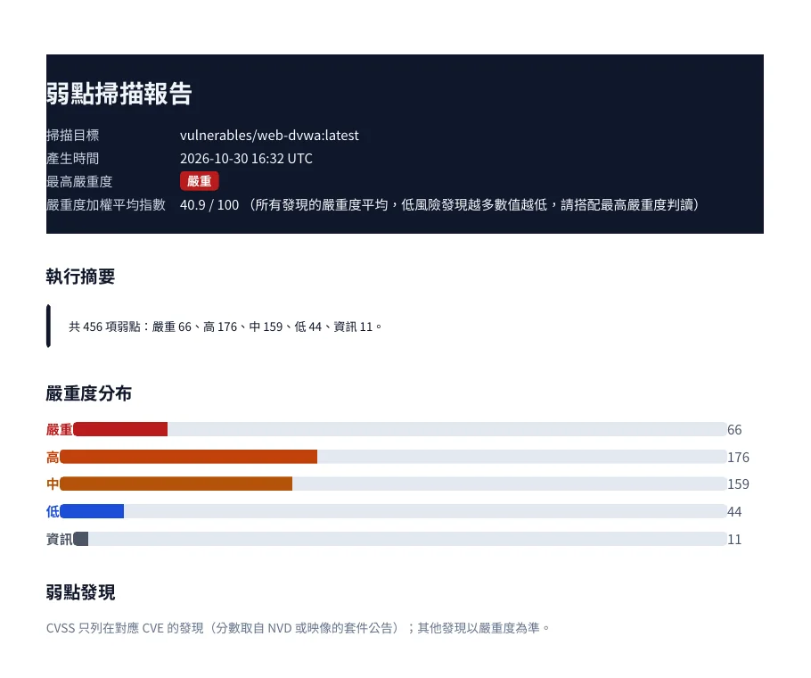
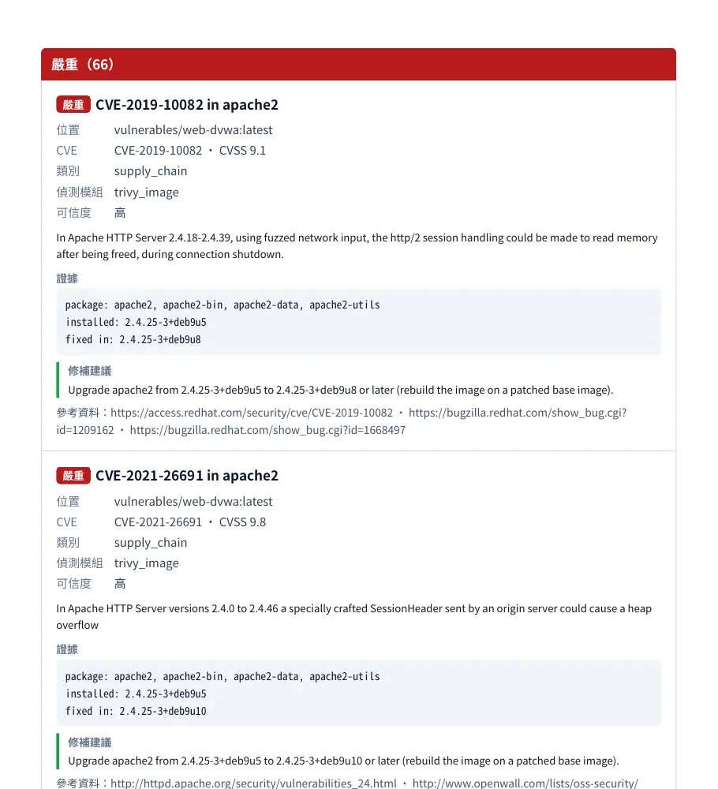

DEFINITION
源碼檢測（SAST）在程式上線前分析原始碼；弱點掃描（DAST）從外部測試執行中的網站與服務；SBOM（軟體物料清單）則列出系統用了哪些第三方元件，用來追蹤已知弱點。三者互補，缺一就會有盲點。
Scanner 是奧洛（Aurobase）AURO NEXUS 產品家族的源碼檢測與弱點掃描平台，把 SAST、DAST、SCA、機密外洩、容器與 IaC 掃描收進同一套權限與報告，輸出 SARIF 2.1.0 與 CycloneDX／SPDX 格式的 SBOM，並以 NVD、CISA KEV、EPSS 情資協助排序修補。
THE PROBLEM
多數組織不缺掃描工具，缺的是把結果收斂成一份能追蹤、能交代的清單。
原始碼、套件、容器、網站各有一套工具與格式，彙整全靠人工，同一個弱點在不同報告裡重複出現。
被問到「系統裡用了哪些第三方元件、哪些有已知弱點」時，很難在短時間內拿出完整而一致的軟體物料清單。
弱點數以千計，缺少「是否已被實際利用」「被利用的機率」這類情資，修補排序只能憑經驗判斷。
CAPABILITIES
掃描以佇列非同步執行，大型專案不會卡住介面；每次掃描的觸發者、範圍與結果都留有紀錄。
PLATFORM SCREENS
以下為 Scanner 對公開的刻意漏洞練習專案與映像所產出的中文報告頁面（2026 年 10 月）。



MEASURED
以下為 2026 年 10 月對公開的刻意漏洞練習目標實掃的結果。
其中嚴重 3 項，耗時 454 秒。
其中嚴重 66 項，耗時 6 秒。
未登入狀態下動態掃描，其中嚴重 6 項，耗時 246 秒。
部署環境已載入 41.4 萬筆 CVE、1,756 筆已遭利用弱點（KEV）。
網站掃描對 5 個植入弱點全數命中、誤報 0；原始碼檢測對 4 個植入弱點全數命中、誤報 0。樣本小，屬功能驗證，不代表整體準確率。
COMPARISON
| 各類掃描工具分開使用 | Scanner | |
|---|---|---|
| 掃描類型 | 每種一套工具 | SAST、DAST、SCA、機密外洩、容器、IaC 同一平台 |
| 報告格式 | 各自不同 | SARIF 2.1.0、CycloneDX、SPDX |
| 修補優先順序 | 依 CVSS 或經驗 | 加入 EPSS 被利用機率與 CISA KEV 已遭利用清單 |
| 權限與帳號 | 各自管理 | 角色權限、多租戶、SAML 單一登入、SCIM 同步 |
| 覆蓋範圍宣稱 | 依工具說明 | 能力登錄照實回報，未完整實作的規則不計入 |
WHAT'S DIFFERENT
平台內建能力登錄，只把實際執行的掃描規則計入覆蓋範圍，報告上看到的就是實際有跑的。
結果以 SARIF、CycloneDX、SPDX 輸出，可以交給任何支援這些標準的工具，不被單一廠商格式鎖住。
把 EPSS 被利用機率與 CISA KEV 已遭利用清單併入每一筆弱點，修補排序有公開依據可循。
ON THE PLATFORM
DEPLOYMENT
以容器交付，可放在公有雲的台灣區域、企業自有機房或私有雲；威脅情資需要連線更新。掃描規則與報告格式可依貴機構需求客製。
以 docker compose 或 Kubernetes 部署於公有雲的台灣區域（例如 Google Cloud 台灣區域）。
部署於企業自有機房或私有雲，掃描工作者可依負載擴充；威脅情資需可連外更新。
依貴機構的開發流程設定掃描範圍、規則與報告格式，並串接 CI 與程式碼平台。
BEFORE YOU START
以下事項會在導入前，依貴機構的環境與需求逐項確認。
NVD、CISA KEV、EPSS 等情資以網路同步；完全隔離網路的環境以離線更新包匯入，更新週期依貴機構規定設定。
個別開源掃描工具的授權條款不允許隨商用產品散布，此類工具依客戶環境與授權另行安裝。
主機掃描的 CVE 依服務版本推論，未經實際利用驗證；發行版已向後移植修補的套件可能誤報，報告會調降可信度。
FAQ
SBOM（Software Bill of Materials，軟體物料清單）列出一套軟體使用的所有第三方元件與版本，用來追蹤已知弱點與授權。Scanner 可產出 CycloneDX 與 SPDX 兩種格式的 SBOM。
源碼檢測（SAST）在上線前分析原始碼；弱點掃描（DAST）從外部測試執行中的網站與服務。Scanner 兩者都涵蓋，另有第三方套件、機密外洩、容器與 IaC 掃描。
平台定時同步 NVD、CISA KEV、EPSS 等公開情資，為每筆弱點補上「是否已遭實際利用」與「被利用機率」，作為修補排序的依據。
可以。結果以 SARIF 2.1.0 輸出，可匯入程式碼平台與 CI 流程；另提供 VS Code 擴充套件。
可以。Scanner 支援 SAML 2.0 單一登入與 SCIM 帳號同步，並提供角色權限與多租戶隔離。